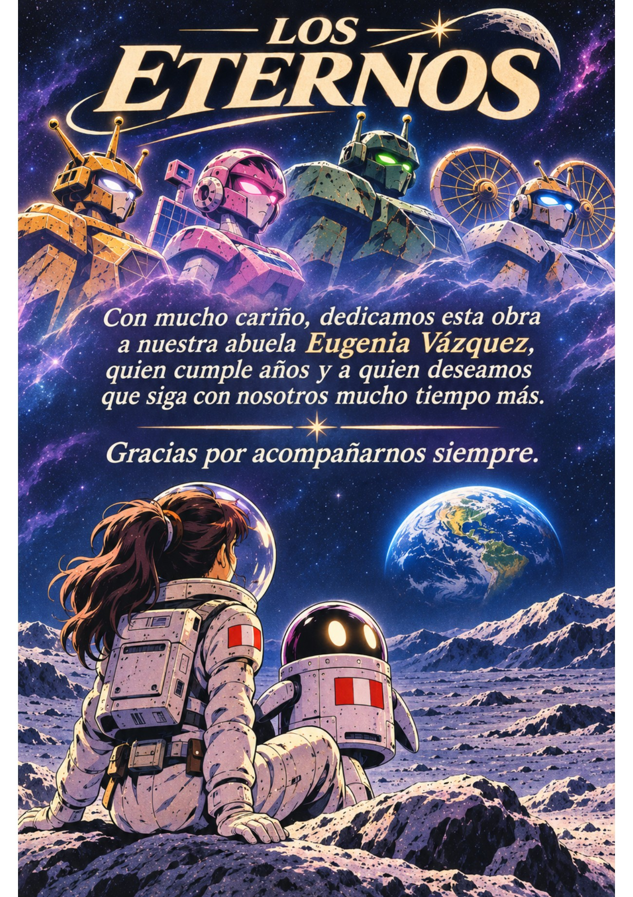

Tras atravesar una anomalía temporal, la comandante Kasi y su compañero Yachay despiertan en la Luna. Sin comunicación y con el oxígeno disminuyendo, buscan ayuda entre las huellas de la exploración espacial.
Una aventura de ciencia ficción sobre la amistad, el conocimiento y el legado de las máquinas que hicieron posible llegar más lejos.
Proyecto del equipo Draw Space para participar en el desafío de innovación de la NASA. Esta obra no implica aprobación, patrocinio ni certificación de la NASA.
Usa Detener antes de escuchar con tu lector de pantalla. Las voces dependen de tu dispositivo; algunas requieren conexión. Cambiar de capítulo o voz detiene la narración actual.
UNA HISTORIA PARA LEER CON TODOS LOS SENTIDOS
La aventura, viñeta a viñeta.
Abre una página para leer sus escenas, diálogos y textos. Puedes usar los encabezados con tu lector de pantalla.
La nave científica HANAQ I cruza un campo de estrellas.
Narrador: Durante una misión de exploración espacial, la nave HANAQ I se adentró en una región desconocida del espacio.
Viñeta 2
Una enorme fractura violeta y azul se abre ante la nave, que se dirige hacia ella.
Viñeta 3
En la cabina iluminada de rojo, Kasi se aferra a los controles. Lleva un traje espacial con la bandera peruana. Junto a ella flota Yachay, un pequeño robot cilíndrico de dos ojos luminosos y brazos cortos. Una chispa sale de su costado.
Viñeta 4
Todo queda negro. No hay palabras ni figuras visibles.
Página 2 El despertar
Página 4 del PDF · Borrador de adaptación
Viñeta 1
Kasi abre los ojos tras el visor de su casco.
Viñeta 2
Sentada en un terreno rocoso, descubre a Yachay caído, con los ojos apagados y chispas en el cuerpo.
Kasi dice: ¡Yachay!
Viñeta 3
Kasi abre un compartimento de Yachay y trabaja en sus circuitos.
Viñeta 4
Los dos ojos de Yachay vuelven a iluminarse.
Yachay dice: ¡Comandante!
Viñeta 5
Yachay flota de nuevo. Kasi sonríe y le tiende la mano.
Kasi dice: Qué bueno que estés bien, pequeño.
Página 3 Sin respuesta
Página 5 del PDF · Borrador de adaptación
Viñeta 1
Yachay proyecta un esquema luminoso de la nave mientras Kasi lo observa.
Yachay dice: ¡Buscando señal de HANAQ I!
Viñeta 2
Ambos miran con preocupación la pantalla de comunicaciones.
Texto visible: SIN RESPUESTA.
Viñeta 3
Kasi y Yachay contemplan una inmensa superficie gris cubierta de cráteres.
Yachay dice: ¡ES LA LUNA! ¡Podemos contactar a la Tierra!
Viñeta 4
La proyección muestra la Tierra y una alerta. La esperanza de Kasi se enfrenta a una nueva dificultad.
Yachay dice: Comandante... las señales de comunicación no responden.
Página 4 Una ruta hacia la esperanza
Página 6 del PDF · Borrador de adaptación
Viñeta 1
Yachay compara constelaciones en una proyección.
Yachay dice: Las constelaciones son diferentes... No puedo reconocer en qué tiempo estamos.
Texto visible: TIEMPO: DESCONOCIDO.
Viñeta 2
Kasi mira el indicador de aire de su antebrazo.
Narrador: Aún tenía suministros de aire. Pero ¿por cuánto tiempo?
Viñeta 3
Kasi señala el horizonte, decidida.
Kasi dice: Yachay, traza una ruta hacia el Mar de la Tranquilidad.
Viñeta 4
Kasi camina por el suelo lunar dejando huellas; Yachay flota a su lado.
Narrador: Sin otra alternativa y con el tiempo en contra, comenzaron a explorar el terreno lunar en busca de una señal que pudiera ayudarlos a volver a casa.
Yachay dice: Siguiendo coordenadas hacia Mare Tranquilitatis. Nos dirigimos al módulo lunar Eagle del Apolo 11. Tiempo de llegada: 15 minutos.
Texto visible: 0.67416° N, 23.47314° E.
Viñeta 2
La Tierra brilla en el cielo. Kasi la mira con emoción.
Narrador: Su amada Tierra. Su hogar... No podían darse por vencidos.
Kasi dice: Pequeño Yachay... aunque he viajado por el espacio, nunca había pisado la Luna.
Viñeta 3
Llegan ante un módulo dorado de cuatro patas, con escalerilla y placa.
Kasi dice: ¡Llegamos! Ahora mismo me siento como Neil Armstrong el 20 de julio de 1969.
Texto visible: HERE MEN FROM THE PLANET EARTH FIRST SET FOOT ON THE MOON JULY 20, 1969.
Viñeta 4
Kasi da un salto alegre junto a la escalerilla.
Kasi dice: That's one small step for man, one giant leap for mankind!
Viñeta 5
Yachay levanta sus brazos y Kasi ríe.
Yachay dice: ¡Comandante! Si usted es Neil Armstrong, yo seré Buzz Aldrin. ¡Magnificent desolation!
Kasi dice: Gracias, pequeño. Haces que, a pesar de todo, no me falte una sonrisa.
Página 6 El despertar de Eagle
Página 8 del PDF · Borrador de adaptación
Viñeta 1
Kasi y Yachay se acercan a la placa del módulo.
Yachay dice: Comandante, ¿y qué dice en la placa metálica?
Kasi dice: Here men from the planet Earth first set foot on the Moon July 1969, A.D. We came in peace...
Texto visible: HERE MEN FROM THE PLANET EARTH FIRST SET FOOT ON THE MOON JULY 20, 1969.
Viñeta 2
Una sacudida derriba a Kasi; Yachay se eleva sorprendido.
Viñeta 3
Una silueta humanoide de luz aparece sobre el módulo.
Eagle dice: We came in peace for all mankind...
Viñeta 4
Ante Kasi y Yachay se alza Eagle, una enorme figura mecánica dorada de ojos luminosos. El módulo histórico permanece detrás.
Eagle dice: ¡¡¡Vaya, un humano!!! ¡Así que a ti también te desecharon!
Página 7 El abandono
Página 9 del PDF · Borrador de adaptación
Viñeta 1
Kasi sigue en el suelo; Yachay se interpone frente a Eagle.
Kasi dice: ¿Acaso tú eres el módulo lunar Eagle de la misión Apolo 11? Pero... ¿cómo?
Yachay dice: ¡Kasi, ten cuidado! ¡Es una presencia hostil!
Eagle dice: ¡Cuidado, lata de atún! No tiene caso que protejas a ese mono. Terminarás como nosotros.
Viñeta 2
Un recuerdo muestra al módulo lunar descendiendo con su motor encendido.
Eagle dice: Yo era un vehículo de dos etapas, de 15.103 kilogramos. Transporté a Neil Armstrong y Buzz Aldrin, los primeros humanos que caminaron sobre la Luna. Los traje sanos y salvos hasta el Mar de la Tranquilidad, con mi motor de descenso de 45.000 newtons.
Viñeta 3
Una lágrima luminosa recorre el rostro metálico de Eagle.
Eagle dice: ¿Y qué recibí a cambio? ¡Solo que me abandonaran! Me dejaron aquí como chatarra. Los años pasaron y sigo aquí... olvidado... en este mar de silencio y polvo.
Página 8 El valor de una misión
Página 10 del PDF · Borrador de adaptación
Viñeta 1
Kasi se levanta y habla con firmeza ante Eagle.
Kasi dice: ¡Eso no es cierto! ¿Chatarra? Tú eres el punto de partida de nuestra historia en este mundo.
Viñeta 2
Un recuerdo muestra la etapa de ascenso despegando de la base dorada.
Kasi dice: Fuiste el primer vehículo tripulado en llegar a la Luna. El conocimiento que nos diste no terminó el 21 de julio de 1969, cuando tu etapa de ascenso despegó.
Viñeta 3
Un astronauta instala instrumentos sobre el terreno lunar.
Kasi dice: El EASEP, de 48 kilogramos, resistió temperaturas superiores a las previstas. Nos demostró que nuestros equipos podían sobrevivir y estudiar la actividad sísmica de la Luna.
Texto visible: PSE.
Viñeta 4
Un astronauta recoge suelo lunar con una pala.
Kasi dice: Gracias a ti trajimos 21,55 kilogramos de rocas y suelo lunar que aún estudiamos.
Viñeta 5
Eagle observa sorprendido un mapa proyectado por Yachay.
Eagle dice: ¿Qué? ¿Cómo sabes eso? ¿Acaso sabes dónde está el EASEP?
Yachay dice: Está exactamente a 17 metros al sur.
Eagle dice: ¿Diecisiete metros al sur...?
Página 9 Eres un legado
Página 11 del PDF · Borrador de adaptación
Viñeta 1
Yachay proyecta diagramas de motores y baterías ante Eagle.
Yachay dice: También sabemos que tu energía venía de seis baterías de plata-zinc. ¡Y que tus motores tenían 45.000 newtons de empuje en descenso y 15.000 en ascenso!
Viñeta 2
Eagle se inclina hacia el pequeño robot.
Eagle dice: ¿Cómo una pequeña lata puede saber toda esa información?
Yachay dice: Fueron ellos. Tengo registradas todas tus hazañas. Cada día, más personas como Kasi pueden conocer tu historia.
Viñeta 3
Kasi extiende una mano hacia Eagle; la Tierra brilla detrás.
Kasi dice: No eres chatarra. Eres un legado. Eres historia. Eres Eterno. Tú vives en cada uno de nosotros.
Viñeta 4
Eagle llora, con los ojos encendidos.
Eagle dice: Entonces... mi sacrificio, mis motores y mis placas doradas no fueron en vano. ¡Sí fuimos útiles! ¡Valió la pena cruzar el vacío para llegar hasta aquí! Gracias, comandante.
Viñeta 5
El indicador del antebrazo de Kasi muestra una alerta roja.
Yachay dice: ¡Comandante! ¡Está perdiendo su nivel de oxígeno! ¡A este paso... no!
Kasi dice: Tranquilo. Encontraremos la manera.
Página 10 Una nueva misión
Página 12 del PDF · Borrador de adaptación
Viñeta 1
Eagle ofrece su mano a Kasi.
Eagle dice: Kasi y pequeña latita... mi misión no ha terminado. Yo haré que vuelvas a tu hogar. Si antes lo hice, con gusto lo haré ahora. Para ello necesitaremos la ayuda de los Eternos.
Viñeta 2
La figura de Eagle se disuelve en partículas brillantes y se convierte en una esfera de luz.
Eagle dice: Me gustó que me llamaras así... Eterno.
Viñeta 3
Kasi, Yachay y la esfera se alejan del módulo.
Eagle dice: Primero, busquemos a la sonda pionera. Surveyor 3.
Narrador: El Eagle tomó la forma de un pequeño orbe de luz blanca y acompañó a Kasi y Yachay en esta nueva ruta.
Yachay dice: ¡Ahora en tu forma actual eres más pequeño! ¡Soy tu superior!
Eagle dice: ¡Jamás!
Viñeta 2
Kasi interviene; el mapa muestra el próximo destino.
Kasi dice: Tranquilos. concéntrense, tenemos que llegar a la región sureste de Oceanus Procellarum.
Eagle dice: Tranquilos, puedo llevarlos. Solo miren mi luz.
Texto visible: 3° S – 23,41° W.
Viñeta 3
De pronto están ante una sonda de tres apoyos, junto a un cráter.
Narrador: Oceanus Procellarum.
Kasi dice: ¿Cómo hiciste eso?
Yachay dice: No encuentro explicación posible en mis datos.
Viñeta 4
Aparece una alta figura mecánica blanca y rosa, con ojos rosados y un panel solar: Surveyor 3.
Eagle dice: Es gracias a que...
Surveyor 3 dice: ¡Calla! ¿Acaso piensas compartir información valiosa con esta escoria?
Página 12 Los primeros datos
Página 15 del PDF · Borrador de adaptación
Viñeta 1
Eagle pide ayuda a Surveyor 3, que mira a Kasi con desconfianza.
Eagle dice: La comandante necesita nuestra ayuda, Surveyor 3. ¡Tenemos una nueva misión!
Surveyor 3 dice: De las cuatro entidades olvidadas en la Luna, yo fui la primera en llegar, el 20 de abril de 1967. ¿Recuerdas lo que sufrí antes de quedar inmovilizada aquí, terrícola?
Viñeta 2
Un recuerdo muestra la sonda descendiendo entre polvo y rocas.
Kasi dice: Claro que lo sé. Tu viaje no fue un descenso tranquilo. Una falla en tu sistema de altitud impidióque el motor se apagara a tiempo.
Viñeta 3
Un diagrama sobre la imagen de la sonda indica dos rebotes.
Kasi dice: Rebotaste dos veces. Y, a pesar de ese susto, te recompusiste y demostraste de qué estabas hecha.
Texto visible: Primer rebote: 10 m. Segundo rebote: 3 m.
Viñeta 4
La cámara de la sonda aparece junto a imágenes del suelo lunar.
Surveyor 3 dice: ¡Exacto! En menos de una hora comencé a transmitir las primeras de mis 6.326 imágenes de televisión.
Viñeta 5
La pala del brazo mecánico excava zanjas.
Surveyor 3 dice: Utilicé mi brazo con la pala muestreadora para excavar cuatro zanjas. Descubrimos que el suelo lunar tenía una consistencia similar a la arena húmeda.
Yachay muestra un esquema del suelo y la pala; Kasi escucha a Surveyor 3.
Surveyor 3 dice: En otras palabras, el suelo era lo suficientemente sólido para soportar un módulo lunar Apolo.
Kasi dice: ¡Wow! ¡Eres una maestra!
Yachay dice: Sin tus datos, los alunizajes tripulados habrían sido un salto al vacío.
Viñeta 2
Surveyor 3 mira de reojo al orbe de Eagle.
Eagle dice: ¡Ja, ja, ja! ¿Rebotaste tantas veces?
Viñeta 3
Surveyor 3 señala el hueco de una pieza en su cuerpo.
Surveyor 3 dice: Ja... casi caigo en sus palabras aduladoras. ¿Acaso no recuerdan lo que ocurrió el 19 de noviembre de 1969?
Viñeta 4
Un recuerdo muestra a dos astronautas caminando entre el módulo y la sonda.
Narrador: Apolo 12 — noviembre de 1969.
Surveyor 3 dice: Los astronautas del Apolo 12, Pete Conrad y Alan Bean, caminaron desde su módulo Intrepid hasta donde estaba yo.
Viñeta 5
Los astronautas retiran la cámara y la pala de la sonda.
Surveyor 3 dice: Me arrancaron la pala muestreadora y mi cámara para llevárselas a la Tierra. ¿Acaso tú vas a disculparte por haberme mutilado?
Página 14 Nos recuerdan
Página 17 del PDF · Borrador de adaptación
Viñeta 1
Kasi explica; Surveyor 3 cruza sus brazos.
Kasi dice: Surveyor 3, ellos no te mutilaron. Parte de la misión era recuperar tus piezas para poder estudiarlas en la Tierra.
Viñeta 2
En un laboratorio, tres científicos examinan la cámara y la pala.
Kasi dice: Sin ellas, los científicos no habrían podido evaluar los efectos de casi dos años y medio de exposición sobre la superficie lunar.
Viñeta 3
Surveyor 3 baja la mirada.
Surveyor 3 dice: ¿Mis piezas les fueron útiles...?
Viñeta 4
Surveyor 3 se vuelve, con lágrimas rosadas. Eagle flota entre ella y Kasi.
Eagle dice: Y guardan todo en el pequeño Yachay. No solo Kasi puede vernos ahí. Muchos humanos nos ven... nos recuerdan.
Viñeta 5
Surveyor 3 señala el medidor de Kasi, que marca una alerta.
Surveyor 3 dice: Terrícola, el medidor de aire de tu brazo te está mandando una alerta. Solo porque Eagle me convenció, acepto esta misión. ¿Qué sería de ustedes sin mí? No puedo decepcionar a quienes siguen mi historia.
Página 15 Un ataque inesperado
Página 18 del PDF · Borrador de adaptación
Viñeta 1
Surveyor 3 se transforma en un orbe rosa.
Yachay dice: ¡Genial! Tranquila, Kasi. Los Eternos nos ayudarán.
Surveyor 3 dice: ¿Los Eternos? Me gusta.
Viñeta 2
Kasi y Yachay se acercan a la luz rosa.
Surveyor 3 dice: Miren directo a mí. Así iremos más rápido a nuestro siguiente destino.
Viñeta 3
Un orbe verde golpea a Kasi y la lanza hacia atrás.
Texto visible: ¡WHAM!
Viñeta 4
Yachay se coloca entre Kasi, caída sobre las rocas, y el orbe verde. Los orbes blanco y rosa permanecen detrás.
Yachay enfrenta al orbe verde, protegiendo a Kasi.
Yachay dice: ¿Quién eres tú? ¿Por qué lastimas a mi comandante?
Viñeta 2
El orbe rosa se dirige al atacante.
Surveyor 3 dice: ¡Detente, Intrepid! Escúchanos primero, por favor.
Viñeta 3
Kasi toca una rayadura en su visor.
Yachay dice: ¡Comandante! ¡Debemos revisar el casco urgentemente!
Kasi dice: Tranquilo, Yachay. Es solo un raspón.
Viñeta 4
Kasi examina el medidor de su antebrazo.
Kasi dice: Es el nivel de aire lo que me preocupa.
Narrador: El nivel de aire estaba por debajo de la mitad. A Kasi no le quedaba mucho tiempo.
Viñeta 5
El orbe blanco de Eagle sale al encuentro del verde, que vuelve hacia Kasi.
Página 17 El enfrentamiento
Página 21 del PDF · Borrador de adaptación
Viñeta 1
Eagle e Intrepid han recuperado sus formas humanoides y chocan sus brazos entre nubes de polvo. Intrepid es un robusto ser mecánico verde oscuro con ojos verdes y una marca en la frente.
Viñeta 2
Eagle intenta detener a su compañero.
Eagle dice: ¡Ya basta! ¡Deja que primero te explique!
Viñeta 3
Intrepid lo mira furioso.
Intrepid dice: ¿Qué vas a explicar de esta traición?
Viñeta 4
Intrepid esquiva a Eagle y se dirige hacia Kasi y Yachay.
Viñeta 5
La luz rosa de Surveyor 3 envuelve a Kasi, que abraza a Yachay, y los aleja del atacante.
Página 18 El recuerdo de Intrepid
Página 22 del PDF · Borrador de adaptación
Viñeta 1
Ante los restos del módulo, el orbe verde corta el camino a Kasi, Yachay y Surveyor 3.
Surveyor 3 dice: No lo entiendes. Nosotros éramos parte de la misión.
Intrepid dice: ¿Ya lo olvidaste? ¿Cómo nos destrozaron?
Texto visible: 3.0128° S, 23.4219° W.
Viñeta 2
Un recuerdo muestra a los astronautas junto al módulo Intrepid.
Intrepid dice: Llegué el 19 de noviembre 1969. Conrad y Bean me usaron y luego me abandonaron tras pasar apenas 31 horas y 31 minutos conmigo.
Viñeta 3
La etapa de ascenso despega, dejando su base en la Luna.
Intrepid dice: ¡Me desecharon!
Viñeta 4
La etapa de ascenso se estrella contra el suelo levantando fragmentos y polvo.
Intrepid dice: El 20 de noviembre, a las 20:21:30 UT, me arrojaron de regreso para que me estrellara.
Texto visible: 3.94° S, 338.80° E.
Intrepid dice: ¡A solo 60 kilómetros de mi propia estación sísmica! ¡ME DESTRUYERON!
Página 19 Misiones que cumplir
Página 23 del PDF · Borrador de adaptación
Viñeta 1
Kasi se incorpora mientras Yachay responde al orbe verde. Una palabra del primer globo no se lee con certeza.
Yachay dice: ¡Era parte… la misión! Nosotros tenemos misiones que cumplir.
Viñeta 2
Un recuerdo muestra a Conrad y Bean trabajando junto al módulo. Una palabra del cartucho presenta una rotulación defectuosa.
Kasi dice: Módulo lunar del Apolo 12, gracias a ti Pete Conrad y Alan Bean realizaron… caminatas lunares.
Texto visible: 7 horas y 45 minutos de exploración. 1,35 kilómetros recorridos.
Viñeta 3
Un astronauta recoge muestras con una pala y un recipiente.
Kasi dice: ¡Recolectaron 34,35 kilogramos de rocas y suelo lunar!
Viñeta 4
El orbe rosa interviene junto a Kasi y Yachay.
Surveyor 3 dice: ¡Ellos llevaron mis piezas a casa para ser estudiadas!
Viñeta 5
Kasi señala una proyección de los instrumentos.
Kasi dice: ¡Tus propias instalaciones continuaron trabajando después de tu partida! ¿Acaso olvidaste el ALSEP? Aquella estación científica que los astronautas desplegaron sobre la superficie lunar.
Intrepid dice: ¡Crees que sabes más que yo! ¡Estuvo ahí abandonado!
Página 20 La misión continuó
Página 24 del PDF · Borrador de adaptación
Viñeta 1
Una vista del conjunto de instrumentos científicos distribuidos sobre la Luna.
Kasi dice: Tenía instrumentos científicos que estudiaban la actividad sísmica, el campo magnético, el viento solar y el entorno lunar.
Texto visible: ALSEP — Apollo Lunar Surface Experiments Package.
Viñeta 2
El generador aparece junto a un esquema de su interior y sus conexiones.
Kasi dice: Contaban con un generador SNAP-27 que utilizaba plutonio-238 para producir energía.
Texto visible: Cápsula interna de combustible (Pu-238). Generación de energía eléctrica. Conexión a los instrumentos científicos.
Kasi dice: Producía alrededor de 70 vatios a 16 voltios para alimentar los experimentos.
Viñeta 3
Ondas de transmisión conectan los equipos con la Tierra.
Kasi dice: Gracias a esa fuente de energía, el ALSEP del Apolo 12 permaneció funcionando hasta el 30 de septiembre de 1977. Tu misión continuó durante casi ocho años.
Texto visible: 1969 — 1977.
Viñeta 4
Un esquema muestra las ondas del impacto propagándose bajo el suelo hasta un instrumento que registra un sismo.
Kasi dice: Tu etapa de descenso permitió que tus astronautas despegaran y regresaran a salvo. Y cuando tu etapa de ascenso impactó contra la Luna, produjo un sismo artificial que tus propios instrumentos registraron. Tu sacrificio nos permitió estudiar el interior de la Luna.
Viñeta 5
Kasi sonríe hacia Intrepid.
Kasi dice: Cada una de tus partes cumplió una función fundamental, Intrepid.
Intrepid dice: Yo seguía cumpliendo mi misión... Pero... ¡ustedes me desecharon!
Página 21 Rumbo a Falcon
Página 25 del PDF · Borrador de adaptación
Viñeta 1
Kasi tiende una mano hacia el orbe verde.
Intrepid dice: Humana... esta chatarra no sabía. Lo siento. Si antes pude enviar de vuelta a mis astronautas, ahora te ayudaré.
Viñeta 2
Los tres orbes rodean a Kasi y Yachay.
Eagle dice: Eternos, aún nos falta una última parada. Iremos por Falcon.
Surveyor 3 dice: ¡Cumpliremos la misión!
Intrepid dice: ¡Regresarán a casa!
Kasi dice: Muchas gracias, amigos.
Viñeta 3
Yachay proyecta el siguiente recorrido lunar.
Yachay dice: Fijando ruta hacia Falcon. Mare Imbrium, Montes Apeninos.
Texto visible: 6.13239° N, 3.63330° E. MARE IMBRIUM / MONTES APENINOS. CONTINUARÁ...
Una luz verde deposita a Kasi y Yachay ante un paisaje montañoso y los restos de un módulo. Los tres orbes los acompañan.
Narrador: Mare Imbrium / Montes Apeninos.
Texto visible: 26.13239° N, 3.63330° E.
Viñeta 2
Yachay observa las luces de alerta del traje.
Yachay dice: ¡Kasi, ya llegamos! Tu traje me manda señales de emergencia.
Viñeta 3
Kasi respira con dificultad.
Kasi dice: Sí, mi oxígeno se está acabando. Solo me quedará la reserva de emergencia.
Intrepid dice: Solo nos falta Falcon. ¡Cumpliremos la misión!
Viñeta 4
Una figura mecánica gris y dorada, de ojos azules y grandes ruedas tras los hombros, les cierra el paso con la mano.
Falcon dice: ¡Alto ahí! No den ni un paso más. ¿Quiénes son ustedes? Mmm... ¿un humano?
Viñeta 5
Los tres orbes se dirigen a Falcon.
Eagle dice: Se llama Kasi. La comandante necesita nuestra ayuda.
Surveyor 3 dice: Tenemos una misión: que Kasi y Yachay vuelvan a su hogar.
Intrepid dice: Se está quedando sin oxígeno. No tenemos mucho tiempo.
Falcon dice: Acaso tú... ¿sabes quién soy?
Página 23 Explorar más lejos
Página 28 del PDF · Borrador de adaptación
Viñeta 1
Kasi responde a Falcon ante las montañas.
Kasi dice: Eres Falcon, el módulo lunar del Apolo 15. El cuarto vehículo tripulado que consiguió aterrizar en la Luna.
Falcon dice: Continúa, comandante.
Viñeta 2
Un recuerdo muestra el descenso del módulo.
Kasi dice: Transportaste a David Scott y James Irwin. Llegaste el 30 de julio de 1971.
Texto visible: APOLO 15 — 1971.
Viñeta 3
Dos astronautas viajan en un vehículo de cuatro ruedas sobre el terreno lunar.
Kasi dice: Trajiste el Lunar Roving Vehicle a la superficie.
Falcon dice: ¡Caminar ya no era suficiente para explorar la Luna! Realizamos tres caminatas lunares, recorrimos 27,9 kilómetros y recolectamos 77,31 kilogramos de muestras.
Texto visible: 18 h 35 min de caminatas lunares.
Viñeta 4
Un astronauta fotografía el terreno desde la escotilla superior.
Kasi dice: Apenas dos horas después de aterrizar, despresurizaron la cabina. David Scott observó y fotografió el terreno desde la escotilla superior durante 33 minutos.
Falcon dice: ¡Ni siquiera habían empezado a explorar y ya estaban trabajando!
Viñeta 5
Un astronauta trabaja entre instrumentos científicos.
Kasi dice: También desplegaron el ALSEP, con instrumentos para estudiar la actividad sísmica, el campo magnético, el viento solar y el interior de la Luna.
Voz sin confirmar dice: ¿Y cómo conseguían energía para todos ellos?
Kasi dice: Mediante un generador SNAP-27 alimentado con plutonio-238.
Texto visible: 70 W — 16 V.
Página 24 Conocimiento que permanece
Página 29 del PDF · Borrador de adaptación
Viñeta 1
El vehículo lunar recorre las montañas con dos astronautas.
Falcon dice: La segunda caminata ocurrió el 1 de agosto de 1971. Recorrimos 12,5 kilómetros hacia el sureste, explorando varios cráteres.
Texto visible: Index — Arbeit — Crescent — Dune — Spur.
Viñeta 2
Los astronautas examinan rocas junto a una gran hendidura del terreno.
Kasi dice: Y el 2 de agosto realizaron una tercera caminata. Recorrieron otros 5,1 kilómetros hacia Scarp Crater y el borde de Hadley Rille.
Viñeta 3
David Scott suelta un martillo y una pluma con los brazos extendidos.
Kasi dice: Antes de marcharse, David Scott realizó un experimento que fue televisado. Dejó caer un martillo y una pluma al mismo tiempo. Demostró que, en el vacío lunar, ambos caen al mismo ritmo.
Viñeta 4
De vuelta al presente, Yachay muestra el período de funcionamiento de los equipos.
Yachay dice: El ALSEP comenzó a funcionar el 31 de julio de 1971. ¡Durante más de seis años transmitió información científica a la Tierra!
Falcon dice: ¡Vaya espectáculo! Eso no lo sabía.
Texto visible: 31 JUL 1971 — 30 SEP 1977.
Viñeta 5
Los tres orbes rodean a Falcon, sorprendidos por su tranquilidad.
Intrepid dice: ¿Qué está pasando aquí? ¡Pensé que tendríamos que convencerte o hasta obligarte con los puños!
Eagle dice: Falcon, ¿qué te pasó? ¿Ya no sientes rencor?
Surveyor 3 dice: Si hace solo unas décadas hasta buscabas venganza...
Página 25 La memoria de todos
Página 30 del PDF · Borrador de adaptación
Viñeta 1
Falcon se disuelve en luz azul y adopta la forma de un orbe.
Falcon dice: Hace poco encontré algo... Una placa y una pequeña figura en memoria de los 14 exploradores espaciales... ...que fallecieron durante los programas espaciales de ambas naciones.
Viñeta 2
Una pequeña figura de astronauta yace junto a una placa en el suelo.
Falcon dice: Estaba aquí... nunca la noté.
Texto visible: IN MEMORY OF THE 14 ASTRONAUTS AND COSMONAUTS WHO GAVE THEIR LIVES IN THE EXPLORATION OF SPACE.
Viñeta 3
Kasi contempla a los cuatro orbes con lágrimas en los ojos.
Yachay dice: Catorce exploradores... Entonces también dejaron un recuerdo para quienes nunca pudieron regresar.
Surveyor 3 dice: Aunque no regresaron, siguen siendo recordados por lo que representaron.
Falcon dice: Como cada uno de ustedes.
Viñeta 4
Kasi y Yachay, de espaldas, miran hacia los orbes y la Tierra distante.
Kasi dice: Todos, humanos y máquinas, forman parte de la misma historia. Explorar también significa recordar, honrar y continuar su legado.
Falcon dice: Por eso debemos regresar a casa... ...y llevar con nosotros la memoria de todos.
Página 26 La fractura de regreso
Página 31 del PDF · Borrador de adaptación
Viñeta 1
Los cuatro orbes se reúnen en un círculo de energía junto al memorial.
Los Eternos dice: Kasi, Yachay... nuestro legado sobrevive. Si las palabras y los datos que guardan cruzan el abismo del tiempo y llegan a quienes aún no han nacido... ...entonces nuestra historia no habrá terminado en el abandono.
Texto visible: IN MEMORY OF THE FOURTEEN ASTRONAUTS AND COSMONAUTS WHO GAVE THEIR LIVES IN THE EXPLORATION OF SPACE.
Viñeta 2
Una fractura luminosa se abre entre las cuatro esferas, con rayos blancos, rosas, verdes y azules.
Los Eternos dice: No importa que el metal desaparezca. Porque el conocimiento que nos trajiste hoy es el verdadero ancla que nos mantiene vivos. Al cruzar esta fractura, volverán a casa.
Viñeta 3
Kasi, llorando, extiende una mano hacia la luz.
Kasi dice: Muchas gracias, amigos. Su historia siempre la llevaré conmigo.
Viñeta 4
Una enorme sombra violeta se extiende frente a la salida. Kasi y Yachay se sobresaltan.
Narrador: Antes de cruzar, una sombra les impidió el paso...
La oscuridad se desplaza ante la fractura y los cuatro orbes.
Texto visible: TIC TAC... TIC TAC...
El Tiempo dice: Comandante... se le agota el tiempo.
Viñeta 2
Una gigantesca figura de humo negro y violeta, de ojos luminosos y largas garras, se alza sobre ellos.
El Tiempo dice: ¿Acaso no comprenden que todo lo que existe está destinado la desaparecer?
Viñeta 3
El Tiempo extiende sus manos sobre las pequeñas luces de los Eternos.
El Tiempo dice: Fui testigo de sus lanzamientos, de sus misiones y de sus despedidas. Solo son restos abandonados en este mundo silencioso.
Viñeta 4
Kasi lo enfrenta, con lágrimas en los ojos y Yachay a su lado.
Kasi dice: ¡Nooo! Cada uno fue parte de un sueño. Cada uno ayudó a alcanzar lo imposible. Su misión dejó una huella que el tiempo jamás podrá borrar.
Página 28 La valentía de Yachay
Página 34 del PDF · Borrador de adaptación
Viñeta 1
El Tiempo se lanza hacia Kasi con una enorme mano de sombra.
Viñeta 2
Yachay acelera y se interpone entre el ataque y su comandante.
Viñeta 3
El impacto arranca uno de los brazos del robot, que queda separado con cables expuestos.
Kasi dice: ¡YACHAY!
Viñeta 4
Kasi recoge y abraza al robot herido.
Kasi dice: ¡Yachay, te tengo!
Yachay dice: ¡Somos mucho más que eso! Somos testigos de la curiosidad humana, de sus sueños y de su valentía. No importa cuánto tiempo pase. Mientras alguien recuerde nuestras historias, seguiremos formando parte del futuro.
Viñeta 5
Los cuatro Eternos recuperan sus cuerpos humanoides y rodean a Kasi y Yachay, protegiéndolos frente a la sombra.
Página 29 Somos Eternos
Página 35 del PDF · Borrador de adaptación
Viñeta 1
Eagle, Surveyor 3, Intrepid y Falcon permanecen firmes alrededor de Kasi, que sostiene a Yachay.
Los Eternos dice: ¡No somos objetos olvidados! ¡Somos historias que se niegan a desaparecer! ¡SOMOS ETERNOS!
Viñeta 2
Eagle golpea la sombra; su brazo dorado empieza a corroerse.
Viñeta 3
Intrepid lanza un puñetazo y su armadura verde se agrieta y oxida.
Viñeta 4
Surveyor 3 y Falcon empujan juntos una corriente oscura.
Viñeta 5
Los brazos de Eagle e Intrepid se deterioran mientras Kasi protege al robot.
Narrador: Cada golpe que chocaba contra EL TIEMPO hacía que sus materiales se oxidaran.
Página 30 Cumpliremos la misión
Página 36 del PDF · Borrador de adaptación
Viñeta 1
Eagle contiene la oscuridad con su brazo dañado y propulsores encendidos.
Eagle dice: Comandante, tienes que cruzar la fractura antes de que se cierre. ¡No dudaré en usar mis 45.000 newtons de empuje para abrirte paso!
Viñeta 2
Surveyor 3 señala la salida.
Surveyor 3 dice: ¡Corre, comandante! ¡El terreno es firme como arena húmeda!
Viñeta 3
Intrepid sostiene la lucha con el puño agrietado.
Intrepid dice: ¡Sobreviví a mi propio impacto para darle ojos sísmicos a la Tierra! ¡Sigue mi frecuencia de 2278.5 MHz y no mires atrás!
Viñeta 4
Falcon extiende su brazo deteriorado ante la sombra.
Falcon dice: ¡Da un solo paso más hacia el oeste y te arrastraré por los 5,1 kilómetros hasta Scarp Crater, atado al chasis de mi Rover! ¡Nadie toca a Kasi y Yachay!
Viñeta 5
Los cuatro Eternos abren paso frente al enorme enemigo; Kasi sostiene a Yachay y mira hacia ellos.
Los Eternos dice: ¡KASI, CORRE! ¡CUMPLIREMOS LA MISIÓN!
Página 31 El camino a casa
Página 37 del PDF · Borrador de adaptación
Viñeta 1
El indicador de Kasi muestra una alerta roja junto al cuerpo dañado de Yachay.
Narrador: Kasi miró su medidor de aire. Aún le quedaba un 15 %.
Texto visible: O₂ — 15 %. SUMINISTRO CRÍTICO.
Viñeta 2
Kasi corre hacia la fractura con Yachay en brazos; los cuatro Eternos continúan luchando detrás.
Viñeta 3
Junto a la salida, Kasi y Yachay vuelven la mirada.
Yachay dice: EL TIEMPO cree que solo somos metal obsoleto. Pero ustedes le están enseñando que una máquina con propósito es más eterna que el propio tiempo.
Viñeta 4
Kasi llora mientras se despide de sus protectores, que siguen enfrentándose a la oscuridad.
Kasi dice: Creyeron que los habíamos dejado atrás en la oscuridad, pero hoy demostraron que siguen siendo los verdaderos dueños de este mundo. Ustedes trazaron el mapa, probaron el suelo, soportaron el vacío y hoy nos salvaron. Misión cumplida, mis queridos amigos Eternos. Gracias por permitirnos encontrar el camino de regreso a casa.
Viñeta 5
Kasi cruza la fractura con Yachay, entrando en una intensa luz blanca. No se muestra qué hay al otro lado.
Página 32 Los Eternos
Página 38 del PDF · Borrador de adaptación
Viñeta 1
Sobre la superficie lunar, los cuatro Eternos permanecen juntos, con las armaduras corroídas pero los ojos aún brillantes. El Tiempo se alza detrás de ellos, junto a la fractura luminosa. La Tierra brilla en el cielo. Kasi y Yachay ya no están.
El Tiempo dice: Pero todo se desgasta... incluso los sueños. ¡Su resistencia solo retrasará lo inevitable!
Eagle dice: Podrás desgastar nuestros cuerpos... pero no el camino que abrimos.
Surveyor 3 dice: Nuestros datos, nuestras muestras y nuestros viajes siguen vivos en la Tierra.
Intrepid dice: Cada descubrimiento despertó nuevas preguntas... y esas preguntas seguirán viajando.
Falcon dice: Mientras alguien observe la Luna, lea nuestros registros o sueñe con explorar más allá... nosotros seguiremos aquí.
Narrador: Porque el tiempo puede borrar el metal, pero no el conocimiento, la memoria ni el sueño de seguir explorando.
Texto visible: LOS ETERNOS. FIN.
DESDE PERÚ, HACIA LAS ESTRELLAS
Somos Draw Space.
LOS ETERNOS es una obra creada por Draw Space con asistencia de inteligencia artificial.
La dirección creativa y la revisión de la obra corresponden a sus autores.
Jessica Madeline Aylas VílchezLíder del equipo
Gerardo Aylas Vílchez
Eduardo Aylas Vílchez
Carolin Aylas Vílchez

A QUIENES NOS ACOMPAÑAN
Para nuestra abuela.
Con mucho cariño, dedicamos esta obra a nuestra abuela Eugenia Vázquez, quien cumple años y a quien deseamos que siga con nosotros mucho tiempo más.
Gracias por acompañarnos siempre.
Dedicatoria transcrita de la contraportada original.
UN MISMO UNIVERSO
Información de accesibilidad
Lectura y teclado
La historia está disponible en HTML sin registro y sin necesidad de JavaScript. Usa Tab y Mayús + Tab para recorrer los controles, Enter para seguir enlaces y Enter o Espacio para abrir las páginas. El primer enlace permite saltar al contenido.
Narración
Elige un capítulo, una voz y la velocidad. Pulsa Reproducir; puedes pausar, reanudar o detener. Si no hay una voz española disponible, continúa con la lectura en texto. Algunos navegadores interrumpen la voz al bloquear la pantalla o cambiar de aplicación.
PDF original
El PDF contiene páginas ilustradas sin texto seleccionable. Su visor y navegación dependen del navegador. Puedes omitirlo y usar la adaptación HTML; el visor nunca es la única vía de lectura.
Validación en curso
WCAG 2.2 AA es nuestro objetivo técnico. Esta versión no está certificada. Faltan la aprobación editorial y pruebas humanas con lectores de pantalla y personas ciegas o con baja visión.